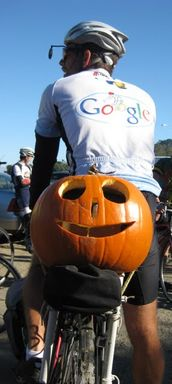

Week 5 Results: Montevina
31 Oct 2009
|
2009 Low-Key Hillclimbs Week 5 Results: Montevina 31 Oct 2009 |
|  |
| Top tandem? (Christine Holmes photo) |
Fog was still clinging to the Lexington Reservoir as Low-Keyers climbed in bright sunshine for another week of perfect weather for the 2009 series!
Riders started on the frontage road just where the climb starts. After a short gradual uphill, the crew turned onto Montevina proper, the narrow, winding, scenic, steep climb from the edge of Highway 17 to near the summit of Bohlman, which we'll visit next week.
And as soon as we made the turn, Justin Lucke, who's been absolutely on fire this year, broke off the front where he stayed the rest of the climb. Justin scorched the climb in an impressive time of 20:49, the only one to break 21 minutes. Since we've never before done this climb, this is a Low-Key record! Second was Carl Nielson while third was last week's second-place Eric Balfus. Time Clark and Ciaran Byrne rounded out the top five. Justin's result has him second in the overall standings, behind Chris Phipps, who sat this week out. Chris is reportedly coming back for more, however, so Justin will face a real challenge moving into that first spot. Eric Balfus, Justin's LGBRC teammate, is in third overall.
Behind the leaders, it was a wake of suffering as riders struggled up the finishing grade, indicated in the profile as 14% but clearly steeper. One rider said "I've done a lot of athletic events, and this was in the top 2 in difficulty." The sustained 9% grade definitely takes the zip out of the legs before the finishing grade.
But Holly Harris had no problems as she returned to Low-Keys after her first climb of Montebello, leading home the women. Leah Toeniskoetter was second and Laura Hipp finished off the top three. Laura's result shot her up to third overall behind Janet Martinez and Mary Ellen Allen, who were both missing this week.
In the team competition, Justin and Eric's 1-3 moved LGBRC ahead of arch-rival Western Wheelers in the overall ranking. Meanwhile Holly's result helped Sr's & Mr's of No Mercy maintain a close third. Bike Trip and SJBC follow. For the week, it was LGBRC followed by an impressive Bike Trip followed by Sisters and Misters. So many strong teams this year!
Of special note this week was all the juniors. At least five showed up, all completing the difficult climb! Leading the group, junior points leader Andre Swart broke 100 points for the first time -- fantastic! This brings his total over 300 points. Also finishing were Billy Hanford, Max Williams, Slater Wellington, and Sean Reynolds, all of the "Fisher Dirt Dudes".
Kley Cardona of ACTC unfortunately arrived too late to register, but rode with the pack and finished in 33:55.
Thanks to coordinator Eric Murray, with help from Carl Butler, Bruce Gardner, Howard Kveck, Laura Lemay, Eric Sorenson, Colin Sturdivant, Melissa Vaccaro, Michelle Vaccaro, and Joey Wu for making today's climb possible!median time = 27:26
pl # rider team category time mph fph score 1 40 Justin Lucke LGBRC 35+ 20:49 10.23 4783 131.77 2 163 Carl Nielson Sr's & Mr's of No Mercy 45+ 21:04 10.11 4727 130.23 3 49 Eric Balfus LGBRC 21:22 9.96 4659 128.34 4 18 Tim Clark Metrigear 40+ 21:28 9.92 4637 127.74 5 28 Ciaran Byrne 21:36 9.86 4610 127.01 6 71 Greg McQuaid San Jose Bike Club 35+ 21:42 9.81 4588 126.41 7 196 Dominic Pezzoni 20-24 21:45 9.79 4579 126.14 8 1 Dan Connelly Low-Key 40+ 21:59 9.68 4528 124.73 9 101 Mark Edwards Bike Trip 45+ 22:06 9.63 4505 124.10 10 151 Doug Philippone Palantir 35+ 22:14 9.58 4478 123.38 11 93 Thomas Novikoff Webcor/Alto Velo 2 22:17 9.56 4469 123.12 12 283 Geoff Drake Bike Trip 50+ 22:19 9.54 4461 122.90 13 7 James Porter Western Wheelers 3 22:20 9.53 4457 122.78 14 315 Tom Gardin 45+ 22:30 9.46 4424 121.88 15 144 Andy Brisnehan Western Wheelers 50+ 22:45 9.36 4377 120.59 16 58 Clark Foy Metrigear 45+ 23:05 9.22 4314 118.84 17 234 Evan Paull Webcor/Alto Velo 25-29 23:16 9.15 4281 117.93 18 156 Rich Hill LGBRC 40+ 23:21 9.12 4264 117.48 19 249 Chris Ott Zenn Racing 40+ 23:33 9.04 4229 116.51 20 198 Fred Haubensak Silicon Valley Triathlon 23:39 9.00 4209 115.96 21 98 Bruce Gardner Sr's & Mr's of No Mercy 35+ 23:41 8.99 4204 115.83 22 157 Joe Fabris Plus 3 50+ 23:51 8.93 4173 114.98 23 259 Matt Wocasek Bike Trip 3 23:59 8.88 4151 114.36 24 291 Tim Sawyer Bike Trip 45+ 24:02 8.86 4143 114.15 25 33 Martin Hyland Western Wheelers 50+ 24:04 8.85 4136 113.96 26 138 Carmelo Rios Plus 3 50+ 24:14 8.79 4109 113.21 27 120 Peter Mehlitz 45+ 24:30 8.69 4064 111.97 28 243 Jeff Farnsworth San Jose Bike Club 50+ 24:48 8.59 4015 110.62 29 192 Michael Simos LGBRC 35+ 24:58 8.53 3987 109.85 30 94 Nathan Cauffman UID 30+ 25:01 8.51 3979 109.63 31 43 Joseph Sullivan 35+ 25:23 8.39 3923 108.08 32 316 Christian Paquet Doogie 50+ 25:24 8.38 3919 107.96 33 45 Sean Broeder Silicon Valley Triathlon 45+ 25:32 8.34 3901 107.46 34 42 Nick Pelly Google 25:36 8.32 3890 107.16 35 96 Phil Dubach Western Wheelers 35+ 25:44 8.27 3868 106.57 36 87 Chuck Spiteri Pen Velo/Pomodoro 50+ 25:54 8.22 3843 105.88 37 161 Mike Salameh 55+ 25:56 8.21 3839 105.77 38 197 Ryan Gibson Google 26:03 8.18 3823 105.33 39 115 Martin Hampton Pen Velo/Pomodoro 45+ 26:03 8.17 3822 105.29 40 113 Kevin Comerford Commuter 26:04 8.17 3821 105.26 41 20 Alan Weatherall San Jose Bike Club 45+ 4 26:11 8.13 3802 104.76 42 137 Neal Herman Spike the Wonder Dog 50+ 26:15 8.11 3792 104.48 43 109 Shance Ordell Western Wheelers 35+ 26:25 8.06 3770 103.87 44 79 Gino Cetani Western Wheelers 35+ 26:34 8.02 3748 103.25 45 24 Dennis Pederson Bike Trip 45+ 26:36 8.00 3743 103.12 46 181 Dirk Rohloff Plus3/Fightin' Bobas 50+ 26:40 7.98 3733 102.85 47 287 Stewart Thompson Pen Velo/Pomodoro 5 26:42 7.97 3728 102.72 48 323 Bart Johnson SLACer 40+ 26:48 7.95 3715 102.36 49 29 Thomas Rabedeau SLACer 50+ 26:49 7.94 3712 102.28 50 180 Dan Brehmer SLACer 40+ 26:56 7.91 3697 101.85 51 114 Andre Swart Ryro Junior 26:59 7.89 3690 101.65 52 402 Bill Preucel Sr's & Mr's of No Mercy 45+ 27:01 7.88 3686 101.55 53 302 Jake Goldfield San Jose Bike Club 27:05 7.86 3676 101.26 54 132 George Junour Santa Cruz 27:08 7.85 3670 101.10 55 75 Dan Cervelli Palantir 27:10 7.84 3666 101.00 56 421 Patrick Keller 40+ 27:22 7.78 3638 100.22 57 56 David Vrane SLACer 45+ 27:29 7.75 3622 99.78 58 347 Matt Beadon 30+ 27:34 7.73 3613 99.53 59 344 Dan Rohrer Leafy Joe 45+ 27:35 7.72 3609 99.44 60 232 Bob Williams Over The Hill 50+ 27:39 7.70 3600 99.18 61 136 Fred Egley Dos Egley's 45+ 27:46 7.67 3587 98.81 62 178 Octavio Camacho Plus 3 30+ 27:52 7.64 3573 98.43 63 150 Daniel Talayco Two wheel tango Goat Ibex 27:56 7.62 3564 98.18 64 140 Gary Shockey 35+ 27:59 7.61 3559 98.06 65 85 John Carrino Palantir 25-29 28:01 7.60 3554 97.90 66 381 Gregory Fuoco Democrats 28:13 7.55 3529 97.23 67 332 Jens Weber Doogie 30+ 28:20 7.52 3515 96.83 68 155 Larry Klein Jerry 45+ 28:32 7.46 3490 96.14 69 69 Nic Brummell Atlas 45+ 28:33 7.46 3487 96.07 70 35 Stephen Fong San Jose Bike Club 40+ 28:38 7.44 3478 95.82 71 324 Paul Melville Doogie 55+ 28:39 7.43 3475 95.73 72 54 Barry Burr Two legs to stand on 50+ 29:23 7.25 3390 93.38 73 410 John Walker Google 45+ 29:33 7.21 3370 92.85 74 122 Mark Powers Pen Velo/Pomodoro 50+ 29:43 7.17 3352 92.34 75 64 Han Wen 40+ 29:44 7.16 3349 92.25 76 247 Keijiro Ikebe Livestrong Livestrong 29:46 7.15 3344 92.13 77 154 Eric Sorenson Bikeforums.net 35+ 30:10 7.06 3301 90.94 78 218 Matt McNelly Taleo 35+ 30:15 7.04 3292 90.69 79 38 Thomas Preisler LGBRC 50+ 30:27 6.99 3271 90.11 80 171 Scott Barry 40+ 30:28 6.99 3268 90.04 81 338 George Lee 30:33 6.97 3260 89.81 82 377 Luis Adarve 30:40 6.94 3246 89.43 83 363 James Dudley 30:43 6.93 3241 89.30 84 73 Vince Cummings 31:13 6.82 3190 87.89 85 57 John Kastel Death Valley 45+ 31:34 6.74 3154 86.88 86 125 Jerrick McCullough 40+ 31:41 6.72 3143 86.59 87 119 Gary Swart Ryro Senior 32:26 6.57 3071 84.59 88 312 Stacy Geiken Sr's & Mr's of No Mercy 50+ 32:37 6.53 3052 84.09 89 89 Bob Gumaer UID 50+ 32:43 6.51 3044 83.87 90 294 Duane Stephens GC Viroforte Mature 32:49 6.49 3035 83.60 91 51 Richard Contreras 50+ 32:52 6.48 3029 83.46 92 117 Bob Corman Spike the Wonder Dog 50+ 33:14 6.41 2996 82.53 93 251 Christopher Olson Google 5 33:21 6.39 2986 82.26 94 142 Jeff Swan Spike the Wonder Dog 40+ 33:27 6.37 2977 82.03 95 306 Joseph Maurer SF Randonneurs 60+ 35:12 6.05 2829 77.94 96 373 Pablo Diaz-Gutierrez 35:35 5.98 2798 77.08 97 322 Aaron Thompson Spike the Wonder Dog 35:56 5.93 2771 76.34 98 371 Jeroem Meiier 35+ 36:12 5.88 2751 75.78 99 350 Ed Noskowski Leafy Joe 45+ 36:47 5.79 2708 74.59 100 318 Wink Saville Google 60+ 37:07 5.74 2683 73.91 101 334 Allen Erkman Dragon Racing 39:08 5.44 2545 70.11 102 257 Johnny Stallings Dragon Racing Single-Speed 40:43 5.23 2446 67.39F 103 409 Mike Ahern LGBRC 40+ 41:02 5.19 2427 66.85 104 364 Billy Hanford Fisher Dirt Dudes Junior 41:16 5.16 2413 66.48 105 328 Matt Slater UID 40+ 41:45 5.10 2385 65.71 106 11 Doug Simpkinson Webcor/Alto Velo 35+ 42:11 5.05 2360 65.03 107 354 Carlos Angobaldo 45+ 43:03 4.95 2313 63.72 108 241 Rusty Carter New 44:14 4.82 2252 62.03 109 281 Max Reynolds Fisher Dirt Dudes Junior 50:04 4.25 1989 54.80 110 359 Slater Wellington Fisher Dirt Dudes Junior 66:00 3.23 1509 41.57 111 368 Chris Wellington Fisher Dirt Dudes 45+ 66:01 3.23 1508 41.56 112 273 Sean Reynolds Fisher Dirt Dudes Junior 73:58 2.88 1346 37.09 F : Fixed or 1-speed
median time = 32:54
pl # rider team category time mph fph score 1 99 Holly Harris Sr's & Mr's of No Mercy 40+ 28:42 7.42 3469 114.60 2 411 Leah Toeniskoetter Turning Wheels for Kids 28:49 7.39 3455 114.13 3 37 Laura Hipp Western Wheelers 29:06 7.32 3421 113.02 4 39 Christy Cowley Sr's & Mr's of No Mercy 40+ 29:21 7.26 3393 112.10 5 416 Lisa Gordon Palantir 45+ 30:11 7.05 3298 108.96 6 301 Laura Schuster Silicon Valley Triathlon 40+ 31:22 6.79 3175 104.88 7 412 Laura Jump Spike the Wonder Dog 4 31:54 6.68 3122 103.15 8 210 Lisa Hern Sr's & Mr's of No Mercy 4 32:38 6.52 3051 100.79 9 245 Laura Egley Dos Egley's 45+ 32:54 6.47 3027 100.00 10 60 Lori Fabris Sr's & Mr's of No Mercy 50+ 34:06 6.25 2921 96.48 11 153 Karis McFarlane Silicon Valley Triathlon Commuter 35:01 6.08 2843 93.93 12 5 Ingrid Erkman Dragon Racing 35:41 5.97 2790 92.17 13 61 Lisa Emmerich Team Rwanda 45+ 38:46 5.49 2569 84.86 14 149 Ingrid McCarty Western Wheelers 50+ 40:37 5.24 2452 80.99 15 4 Pat Parseghian Google 50+ 43:20 4.91 2298 75.91 16 265 Sya Reschar Dragon Racing MTB 43:43 4.87 2278 75.24 17 118 Christine Holmes Low-Key 40+ 46:05 4.62 2161 71.39
pl team score scoring 1 LGBRC 377.59 (Justin Lucke, Eric Balfus, Rich Hill) 2 Bike Trip 361.36 (Mark Edwards, Geoff Drake, Matt Wocasek) 3 Sr's & Mr's of No Mercy 360.65 (Carl Nielson, Bruce Gardner, Holly Harris) 4 Western Wheelers 357.33 (James Porter, Andy Brisnehan, Martin Hyland) 5 San Jose Bike Club 341.78 (Greg McQuaid, Jeff Farnsworth, Alan Weatherall) 6 Palantir 333.34 (Doug Philippone, Lisa Gordon, Dan Cervelli) 7 Silicon Valley Triathlon 328.30 (Fred Haubensak, Sean Broeder, Laura Schuster) 8 Plus 3 326.61 (Joe Fabris, Carmelo Rios, Octavio Camacho) 9 Pen Velo/Pomodoro 313.89 (Chuck Spiteri, Martin Hampton, Stewart Thompson) 10 SLACer 306.48 (Bart Johnson, Thomas Rabedeau, Dan Brehmer) 11 Webcor/Alto Velo 306.08 (Thomas Novikoff, Evan Paull, Doug Simpkinson) 12 Google 305.34 (Nick Pelly, Ryan Gibson, John Walker) 13 Doogie 300.53 (Christian Paquet, Jens Weber, Paul Melville) 14 Spike the Wonder Dog 290.15 (Neal Herman, Laura Jump, Bob Corman) 15 UID 259.21 (Nathan Cauffman, Bob Gumaer, Matt Slater) 16 Metrigear 246.58 (Tim Clark, Clark Foy) 17 Dragon Racing 237.53 (Ingrid Erkman, Sya Reschar, Allen Erkman) 18 Dos Egley's 198.81 (Laura Egley, Fred Egley) 19 Low-Key 196.12 (Dan Connelly, Christine Holmes) 20 Ryro 186.24 (Andre Swart, Gary Swart) 21 Leafy Joe 174.03 (Dan Rohrer, Ed Noskowski) 22 Fisher Dirt Dudes 162.85 (Billy Hanford, Max Reynolds, Slater Wellington) 23 Zenn Racing 116.51 (Chris Ott) 24 Turning Wheels for Kids 114.13 (Leah Toeniskoetter) 25 Plus3/Fightin' Bobas 102.85 (Dirk Rohloff) 26 Santa Cruz 101.10 (George Junour) 27 Over The Hill 99.18 (Bob Williams) 28 Two wheel tango 98.18 (Daniel Talayco) 29 Democrats 97.23 (Gregory Fuoco) 30 Jerry 96.14 (Larry Klein) 31 Atlas 96.07 (Nic Brummell) 32 Two legs to stand on 93.38 (Barry Burr) 33 Livestrong 92.13 (Keijiro Ikebe) 34 Bikeforums.net 90.94 (Eric Sorenson) 35 Taleo 90.69 (Matt McNelly) 36 Death Valley 86.88 (John Kastel) 37 Team Rwanda 84.86 (Lisa Emmerich) 38 GC Viroforte 83.60 (Duane Stephens) 39 SF Randonneurs 77.94 (Joseph Maurer)